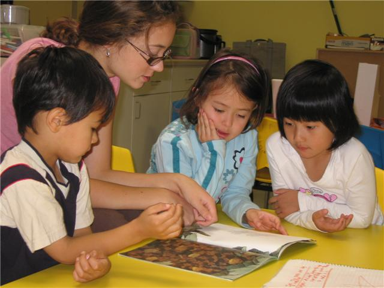
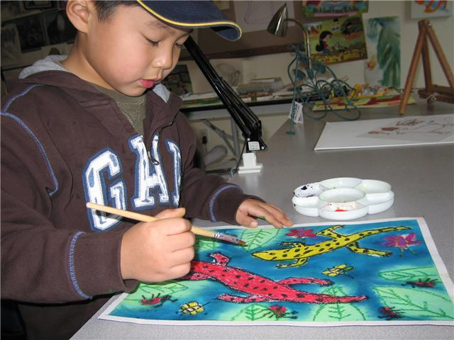
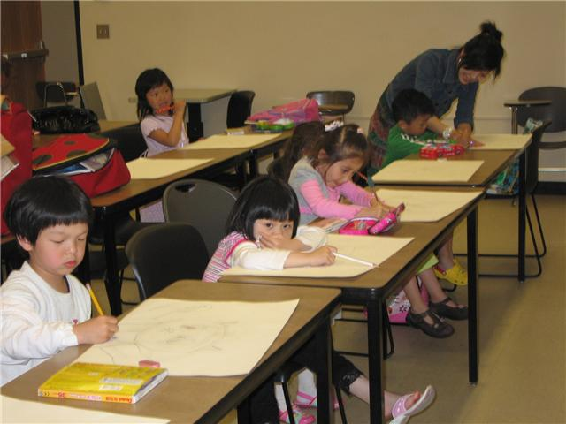

焦莹中华文化艺术学校课后辅导班
地址： 1895 NW 169th Pl, Beaverton, OR 97006 (in the Twin aks business center)
服务区域：包括Beaverton周围所有的小学（可以到校接学生）
时间：周一至周五，
2:30pm 至 6:30pm课程：［英文课］
[中文课] [ 算术／珠算心算] [美术 ] [课后作业]目的：经济实惠：节约家长的业余时间 ,不用在下班之后再赶时间到处送孩子上
课，孩子累家长更累。解决家长的后顾之忧 ，充分利用课后时间解决学 校所不
能解决的问题。把孩子们应该补充的学习，合理，客观，有效，愉快的完成。
全家可以共同欢度周末，并多一些和孩子交流感情的时间。
教学
: 中英文课：首先按照学生的学习程度选择切实可行的教材，通过各种行之有效的授课方式予教于乐。把学习语言变为一件快乐的事情，把实际学习效果
达到最佳标准。
中文课： 中文课分为两个部分。（
1） 初级班：“ 新意中文教材”属于启蒙中文教育阶段。以通俗易懂，趣味上口的儿歌，引导学生掌握标准发音。利用各
种教学手段予教于乐，培养学生的学习兴趣和口语表达能力。
(2)STANFORD马立平教材班。
数学课：此课程分为两部分，（
1）算术课 （2）珠算心算课(1).
算术课 :为学校算术课的辅导和提高，并为参加数学比赛作准备。(2).
珠心算课： 在脑中运用算珠形象模拟珠算运算的方法就是珠算式心算，简称“珠心算”。它依靠形象记忆，借助形象思维进行计
算，简单有趣便于接受。
5-9岁是最佳学习期， 因为珠心算完全符合儿童的认知特点。所以， 即可提高学习数学的热情和兴趣
又能有效并迅速的提高儿童的计算能力。使头脑更灵活，聪明。是开发 人脑
的潜能 与智力，增强儿 童记忆力的最好途径。
美术课：
7岁以下班：（1）色彩感觉的培养,作一些基本色彩的组合训练，能画出暖色调和冷色调的图画。（
2）基本造型的培养 ： 我们就从圆形，方形，三角形等几何形状开始练习，并用这些基本形状
进行变化组合，突出趣味性，引导他们掌握基本的绘画方法，并启
发他们用学习的初步积累进行自由的发挥和创造。
7
岁以上班：进行四种基础课的教授，静物素描／动物素写／色彩课／创作课。通过我校
15年的美术教学经验，已经形成了一套行之有效的教学方案。学生们通过这些基础课的学习，会有一个比较全面
扎实的绘画技巧和知识。